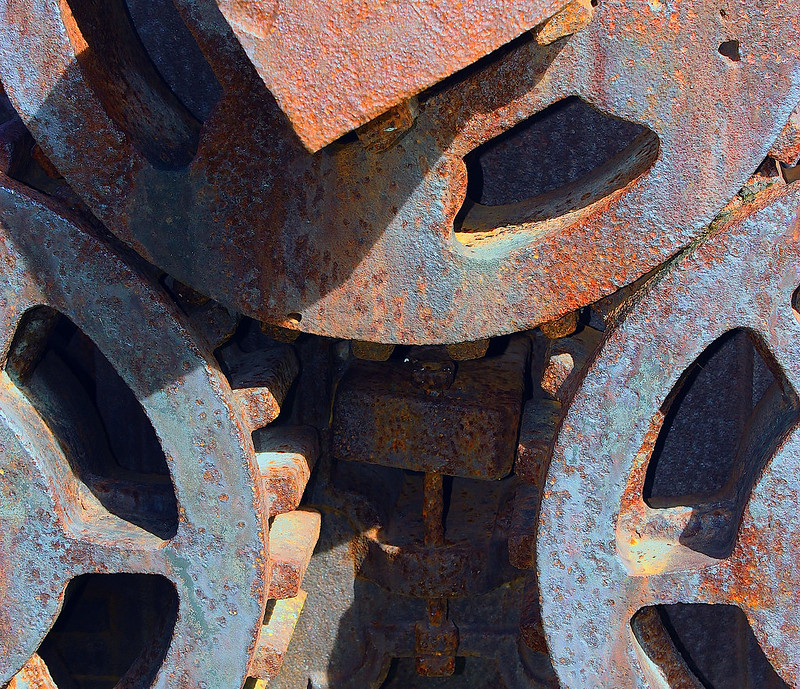

SCP-882

- Item nº:
- SCP-882
- Classe do objeto:
- Euclid
Procedimentos Especiais de Contenção:
O SCP-882 deve ser mantido o tempo todo em um ambiente líquido composto por no mínimo 40% de água do mar. O objeto deve ficar suspenso por meios não metálicos, atualmente uma corda de fibra de algodão que deve ser trocada diariamente. O objeto também deve ser inspecionado diariamente em busca de sinais de descamação da ferrugem. Se qualquer parte do SCP-882 aparecer sem revestimento de ferrugem, ela deve ser imediatamente imersa em uma solução de 100% de água do mar. A água deve ser retirada diretamente do oceano. A concentração só deve ser reduzida quando o objeto estiver novamente coberto de ferrugem.
Nenhum metal pode ser colocado na área de contenção. Somente materiais orgânicos são permitidos na área de contenção, e qualquer contato com o SCP-882 exige o uso de luvas grossas de algodão. Qualquer metal que entre em contato com ele deve ser cortado por calor, derretido e mantido imerso em 100% de água do mar em uma área separada.
Quaisquer problemas auditivos relatados pela equipe devem ser comunicados imediatamente, e o pessoal afetado deve se submeter a um exame psicológico completo e, dependendo dos resultados, ser transferido para outra instalação ou mantido em contenção permanente em [EXPURGADO].
Descrição:
O SCP-882 parece ser uma montagem aleatória de engrenagens, cabos, polias, parafusos e correias, todos feitos de uma amálgama de vários metais. O tamanho do objeto no momento da recuperação era de aproximadamente oitenta e sete metros cúbicos. O tamanho atual é de aproximadamente doze metros cúbicos. O SCP-882 enferruja rapidamente na água do mar. Nenhuma fonte de energia identificável foi encontrada, mas todos os componentes começam a se mover se não estiverem cobertos de ferrugem. O SCP-882 é completamente silencioso o tempo todo, não importa o nível de atividade que atinja.
Qualquer metal que toque o objeto fica permanentemente preso a ele e, ao longo de alguns dias, torna-se uma nova parte do objeto. A matéria orgânica permanece inalterada. O SCP-882 é extremamente resistente, com resistência à tração e tenacidade superiores às de uma liga de titânio de grau aeronáutico por peso, mesmo que sua composição pareça ser uma liga aleatória de ferro, estanho, ouro e outros metais, alguns ainda não identificados. É preciso aplicar calor extremo e concentrado por várias horas para separar até uma pequena porção da montagem principal.
Pessoas que permaneceram nas proximidades do objeto por períodos prolongados desenvolveram alucinações auditivas enquanto estavam perto dele, principalmente o som de rangidos e estalos. O som se intensifica e só diminui quando se joga metal no objeto. Sujeitos em estados avançados de psicose se jogaram contra o objeto, resultando em morte quase instantânea por esmagamento. O corpo costuma ser puxado para dentro e é impossível de recuperar.
O SCP-882 foi recuperado em um local na costa nordeste da Ilha Banks. A área estava desprovida de todo metal e minério metálico em um raio de uma milha. O SCP-882 foi encontrado no centro geométrico da área. O SCP-882 estava submerso em água do mar no momento da descoberta. Uma pequena cidade foi encontrada nas proximidades, abandonada havia vários anos. O SCP-882 foi removido e logo começou a soltar ferrugem, fazendo com que as várias peças começassem a se mover. Após vários acidentes, o Dr. Gears autorizou que o SCP-2519 fosse tocado em loop, o que reduziu com sucesso o movimento do objeto, permitindo o acesso seguro. O SCP-882 foi então cortado e contido no local.
Nota: O SCP-882 não deve ser levado para as proximidades do SCP-271 nem de qualquer sujeito possivelmente contaminado pelo SCP-217.
Adendo: Consulte a Entrevista 882-1 para mais informações.